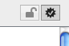

Sécurisez vos emails

tlpl: avec un Mac
- Récupérez un certificat signé par une AC: cliquez ici pour un certificat gratuit ;
- ouvrez le fichier ;
- supprimer le fichier en mode sécurisé ;
- utilisez Mail plutôt que l’interface web de gmail.
J’ai (re)découvert comment adoptez la norme S/MIME. J’ai été surpris de voir à quel point ce fut aisé. Il y a seulement quelques années c’était bien plus difficile à accomplir. Maintenant je peux signer et chiffrer mes mails.
Pourquoi est-ce important ?
Signer : cela permet de certifier avec une absolue certitude que la personne qui a écrit le mail est vous ou au moins qu’elle a utilisé votre ordinateur.
Chiffrer : parce que parfois il est nécessaire d’être certain qu’une conversation reste privée.
Comment procéder ?
- Récupérez un certificat signé par une authorité de certification : cliquez ici pour récupérer un certificat gratuit ;
- ouvrez le fichier ;
- supprimer le fichier en mode sécurisé ;
- utilisez Mail plutôt que l’interface web de gmail. Maintenant vous devriez voir ces icônes :

n.b. : si vous utilisez gmail et que vous ne travaillez pas toujours avec un Mac, vous devriez considérer d’utiliser le module gmail S/MIME de firefox.
Published on 2010-10-10
DdzFFzCqrhtAvdkmATx5Fm8NPJViDy85ZBw13p4XcNzVzvQg8e3vWLXq23JQWFxPEXK6Kvhaxxe7oJt4VMYHxpA2vtCFiP8fziohN6Yp